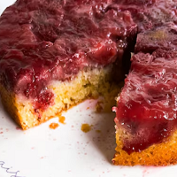
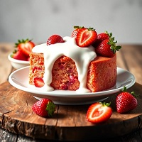
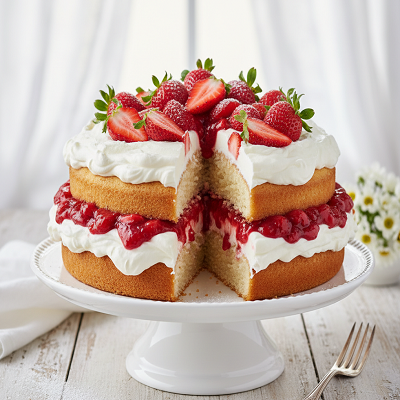
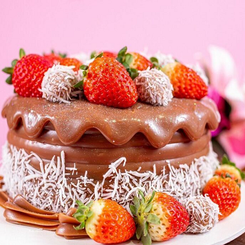
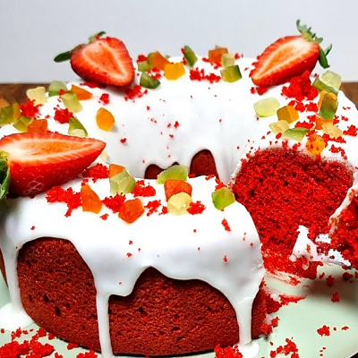
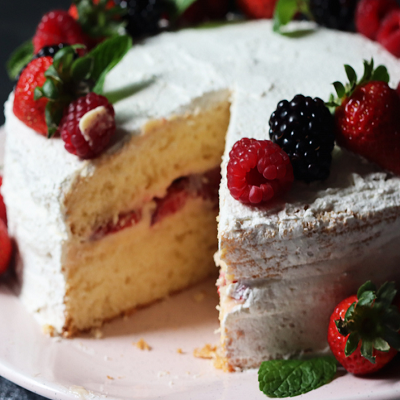

BOLOS EM ALTA




MAIS RECEITAS

INGREDIENTES:
- 2 xícaras de farinha de trigo
- 1 e 1/2 xícaras de açúcar
- 1 colher de sopa de fermento em pó
- 1/2 colher de chá de sal
- 1/2 xícara (115g) de manteiga sem sal, em temperatura ambiente
- 1 xícara de leite integral
- 2 ovos grandes
- 1 colher de chá de extrato de baunilha
Ver mais...

INGREDIENTES:
- 3 ovos grandes
- 1 e 1/2 xícaras de açúcar
- 2 xícaras de farinha de trigo
- 1/2 xícara de água morna
- 1 colher de sopa de fermento em pó
- 1 colher de chá de essência de baunilha
Ver mais...

INGREDIENTES:
- 4 ovos
- 2 xícaras de açúcar
- 2 xícaras de farinha de trigo
- 1 xícara de água quente
- 1 colher de sopa de fermento em pó
- 1 colher de chá de baunilha
Ver mais...

INGREDIENTES:
- 3 ovos
- 2 xícaras de farinha de trigo
- 1 e 1/2 xícaras de açúcar
- 1/2 xícara de óleo
- 1 xícara de leite
- 1 colher de sopa de fermento em pó
- 1 colher de chá de essência de baunilha
Ver mais...

INGREDIENTES:
- 3 ovos
- 1/2 colher(es) de sopa fermento em pó químico
- 10 gota(s) corante gel vermelho
- 1 colher(es) de sopa cacau em pó
- 2/3 xícara(s) de chá água morna
- 1 e 1/2 xícara(s) de chá açúcar refinado
- 2 xícara(s) de chá farinha de trigo
Ver mais...

INGREDIENTES:
- 4 Ovos grandes
- 3/4 xícara (chá) de Açúcar refinado
- 1 xícara (chá) de Farinha de trigo
- 3 colheres (sopa) de Óleo vegetal (milho ou girassol)
- 1 colher (chá) rasa de Fermento em pó químico
- 1 pitada de Sal
Ver mais...